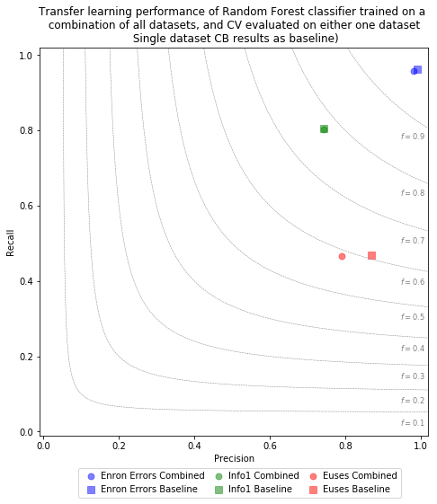

In addition to the studies presented in the paper we also investigated the effect of using a combinatio of all datasets for training of a classifier. In specific, we trained Random Forest models using a combination of all of the three datasets (Enron Errors, Info1, Euses), and evaluated its performance when applied to predict faults in either one of the three datasets. The models were optimized and trained using a gridsearch approach. A 10x10 Crossvalidation was used to withhold part of the target dataset from the training data.
To compare model prediction performances, we employ a custom plot type, the Precision / Recall / F1 plot, that combines precision, recall, and f1-performance for a specific evaluated model. The evaluation result of each trained model is illustrated by a symbol in the plot area. For any given symbol in the plot, its horizontal position corresponds to the precision score of the evaluated model. Likewise, its vertical precision corresponds to the Recall score of the evaluated model. Lastly, the symbol's position in relation to radial lines indicate the model's achieved F1 measure.
The "Combined" entries in the plot signify the evaluation result of a model that was trained on a combination of datasets, and evaluated on the named specific dataset. E.g. "Enron Errors Combined" shows the result of the Random Forest model trained on the combination of datasets and evaluated on the Enron Errors dataset. The "Baseline" entries are the baseline results obtained for training and evaluation of Random Forest classifiers on the specific dataset, that were reported in the main matter of the paper.
Data CSV